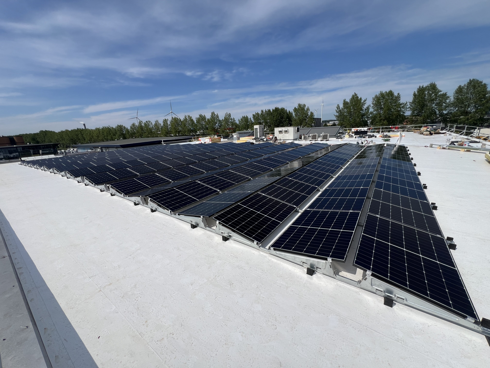

Voor veel bedrijven is het dak een van de grootste onbenutte assets. Met een goed ontworpen zonnepaneleninstallatie van Vibe verlaagt u uw energiekosten, benut u meer eigen opgewekte stroom en wordt u minder afhankelijk van schommelende energieprijzen.
Een groot deel van de Nederlandse bedrijfsdaken ligt leeg. En waar wel panelen liggen, schakelen die vaak te vroeg uit bij netcongestie, leveren ze terug tegen een lage prijs of bewegen ze niet mee met uw verbruik.
Vierkante meters opwekpotentieel die niets opleveren — terwijl uw dak er al ligt.
Onbenut oppervlakOpwek gaat het net op tegen lage of negatieve prijs in plaats van eigen verbruik.
Eigen verbruik ~30%Bij netcongestie wordt PV teruggeregeld — opbrengst die letterlijk wegvalt.
Productie verlorenEen dak dat jarenlang betrouwbaar energie opwekt, maximaal eigen verbruik mogelijk maakt en samenwerkt met de rest van uw energiesysteem. Daarvoor is meer nodig dan panelen op een dak: een installatie die op uw werkelijke verbruik is ontworpen en gekoppeld aan opslag en sturing. Vibe engineert, bouwt én beheert het geheel als één systeem.
— Eén partner. Van ontwerp tot beheer.
PV staat nooit op zichzelf. Elke kWh wordt direct benut, opgeslagen of verhandeld via het EMS.
Dakscan en sizing op uw werkelijke verbruik — niet op het maximale aantal panelen.
Plat dak, schuin dak, carport of veld — voor elke locatie de juiste opstelling.
Het brein stuurt elke kWh: direct verbruiken, opslaan of verhandelen.
Eigen verbruik stijgt tot 70–85%, terugleveren tegen lage prijs daalt naar bijna nul.
Met EMS en accu loopt eigen verbruik op tot 70–85% — vs. ~30% bij PV zonder sturing.
N=14 sites · 2024Tier-1 panelen met langjarige vermogensgarantie en NEN/IEC-certificering.
fabrieksgarantieVan opdracht tot live: dakscan, engineering, vergunningen, plaatsing en EMS-koppeling.
100–1.500 kWp rangeEigen energieproductie uit dak en terrein — een asset op de balans, geen statement.
balanswaardeDe juiste sizing volgt uit uw dak en verbruiksprofiel — die rekenen we per locatie door.
Stel uw vraagWij analyseren uw dak, energieverbruik en groeiplannen en berekenen welke zonnepaneleninstallatie het beste past bij uw organisatie.